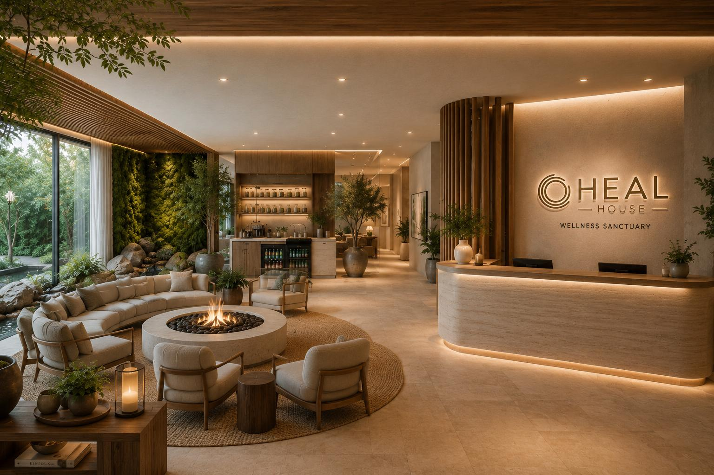

6700 Highway 7.
A wellness & retirement community.
The fund contributes the land and becomes the landowner. A 40% Build Canada Homes grant plus a CMHC mortgage cover ~98% of cost — the fund recovers most of its basis at close and keeps the asset, the income and a Year-20 buyout. Real assets that do real good.

A transit community on Highway 7.
A 3.53-acre parcel on the Highway 7 rapid-transit corridor in Vaughan — VIVA BRT at the door, 38-storey approvals nearby and a 55-storey rental under construction to the east. Entitled for high density, it becomes a complete wellness community: homes, a Heal House clinic and retail. The largest site in the pipeline.
6700 Highway 7, Vaughan · PIN 033170029 · ~360 underground parking stalls · VIVA bus rapid transit corridor.
Federal capital builds it. The fund owns the land.
The same land-unlock behind every project in the fund — here at flagship scale. The fund contributes land, not cash; federal capital does the heavy lifting; the fund recovers most of its basis at close and holds a cash-flowing asset.
Grant + debt fund 98%
A 40% Build Canada Homes grant (non-repayable) plus a CMHC MLI Select mortgage cover ~98% of the $375M cost.
~75% recovered
The fund recovers ~$22.5M of its ~$30M land basis at close — capital back in years, not decades.
60% + Year-20
~30% permanently affordable; the fund keeps the asset, 60% of cash flow and a Year-20 buyout.
720 homes over a Heal House podium.
Two towers, four home types, and a ground-floor Heal House clinic — a complete wellness community. 256 homes (~36%) are non-market, with a Heal Living retirement tier woven in.
Nobody loses their home to this project.
The site's existing residents are bridged, not displaced — with interim housing during construction and a guaranteed path back into permanent supportive homes.
Existing motel rooms run as interim transitional housing during the build.
Permanent transitional / supportive homes built into the community, BCH-funded.
Any displaced resident returns into a permanent transitional unit.
Grant + debt cover 98% of cost.
Illustrative, at close · subject to appraisal, QS and BCH / CMHC confirmation.
| Total development cost (uses) | $375M | incl. $30M land |
| Build Canada Homes grant | $138M | 40% of build · non-repayable |
| CMHC MLI Select mortgage | $230M | 1.30× DSCR · ~71% LTV |
| Fund equity left in | $7.5M | 25% of the land basis |
| Land basis recovered at close | ~$22.5M | ~75% back · grant + debt = 98% of cost |
Same site. The grant is the unlock.
Conventional pencils as a hold, not a flip (negative merchant margin). The 40% grant is what turns the same building into a capital-light, basis-recovered, impact-aligned hold.
$2M a year on $7.5M in — then $427M of equity.
A small slice of equity, a strong current yield, and a very large long-dated equity position as the mortgage amortizes and the asset grows.
$138M of federal capital, 256 homes that last.
Non-repayable grant · ~$539k per affordable + transitional home.
A flagship-scale addition.
The fund is a ~$50M mutual fund trust across 7 Ontario projects + the 8440 flagship — ~590 homes, ~175+ affordable, ~4.0× net / ~15% net IRR over 20 years (5% pref · 2% fee · 20% carry). 6700 alone nearly doubles the affordable output.
~$50M · 7 + flagship
~590 homes, ~175+ affordable; ~4.0× net over 20 yrs.
720 homes · ~2× affordable
Larger than the current seven projects combined.
Upside · separate allocation
Flagship-scale federal allocation, likely phased — not baked into the ~$50M raise.
What we're confirming.
A concept-stage candidate — flagship-scale and exciting, and honest about the gates. We underwrite them, not around them.
Become the landowner. Build the homes.
Recycle the capital.
The fund's largest candidate — 720 homes, ~30% affordable, a Heal House clinic and a Heal Living retirement tier, on a 40% Build Canada Homes grant + CMHC mortgage covering ~98% of cost. The fund recovers ~75% of its ~$30M basis at close and keeps the asset, the income and a Year-20 buyout. Concept stage; figures indicative.
This communication is for information only and is not an offer to sell or a solicitation to buy any security. Units are offered only by the Fund's offering documents, which contain important information about objectives, risks, fees and expenses; read them carefully before investing. Investments are subject to risk, including possible loss of principal. Health, wellness and sustainability outcomes are objectives, not guarantees. Figures are illustrative unless sourced.